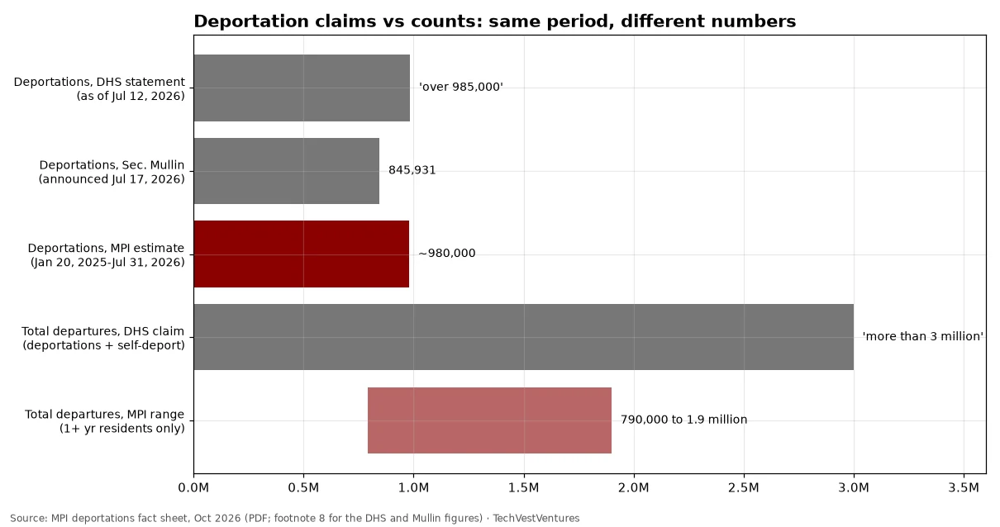

Q8. Claims vs Counts

On deportations proper, MPI's FOIA-based count (~980,000) roughly matches DHS's own 'over 985,000' statement, while Homeland Security Secretary Mullin announced 845,931 on Jul 17. The real gap is in 'total departures': DHS claims more than 3 million (about 1 million deportations plus about 2 million self-deportations of unauthorized immigrants), while MPI estimates 790,000 to 1.9 million departures of immigrants with at least a year of US residence, roughly half DHS's self-departure figure. MPI notes DHS cannot directly measure self-departures because it does not record most land exits at the Mexico border. The two totals are not defined identically (MPI excludes border turnbacks and people here under a year), which is itself part of the controversy.
Sources: MPI deportations fact sheet, Oct 2026 (PDF; footnote 8 for the DHS and Mullin figures)